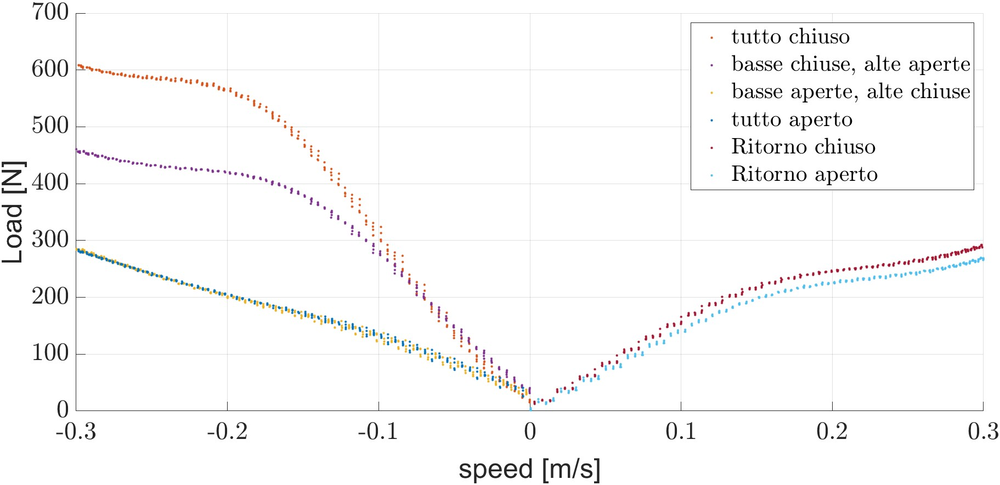
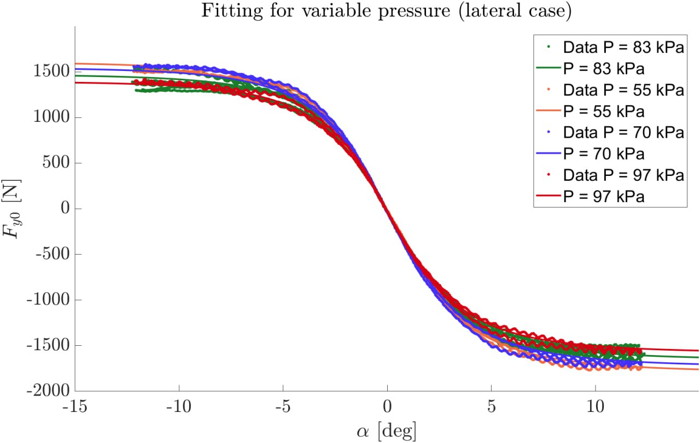
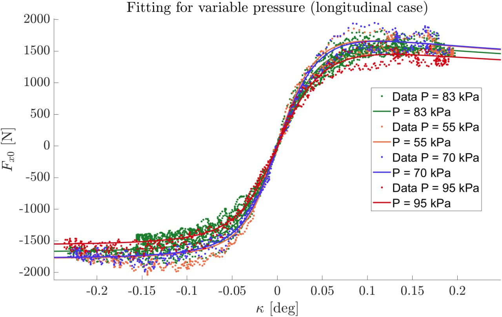
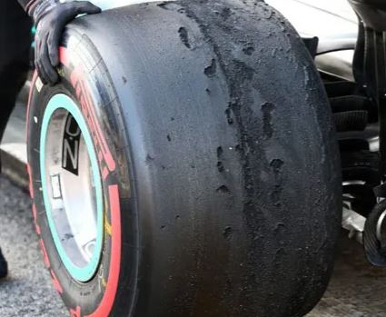

PROCEDURE SET-UP
update FILE Setup_Log for each change in regulation or set up
update all the values in the checklist for the incoming test
The tools for convergence and camber can be found in the drawer "ASSETTO". Necessary tools for setup are:
- camber shims
- camber gauge
- bubble level
- laser and mounting brackets
- metric tape
- metric rod
- metric laser and relative support
- lockinig steer shims
- black plates and toilet paper for laser calibration
- 10 bend wrench for tie rod regulation
- 10, 13, 18, 20 wrenchs and 5mm allen key
- 4mm allen key, 12mm wrench, screwdriver for suspension
PRELIMINARY CONTROLS
Car must be completed and ready to drive (Porco, porchetto, Aero and so on):
- Check pull/push rod lengths, collect data for kinematic suspension analysis
- Check preload (spring length), a good starting value for Fenice EVO can be from 3 to 6 mm.Bring the ring nut close to the spring and then count the turns of the ring nut (ratio of turns/mm is in the user manual).
- Check tire rotation directions and wear, check that tyre pressure is around 1 bar for each wheel.
- Set all shock settings to all open (high speed compression, low speed compression and rebound) and check shock pressure.
- Check that the scales are consistent with each other and if not, proceed with the calibration; some of them have 1% of inaccuracy so calibrate to have the same measure in the range between 60 Kg to 70 Kg.
- Positionate the scales and level them. (!! both among themselves and with the scales !!)
Note that for the Vehicle set-up it must be followed the following path:
- Vehicle Height
- Camber
- Toe
- Balance
- Repeat the process if it is needed from point 2
- Suspension regulation (compression & rebound)
- Tyre Pressure
RIDE HEIGHT AND BALANCE
Dismount antirollbar and put the vehcle on the RECALIBRATED scales, if not, calibrate them! The first step to do is adjust the ride height as function of the dynamic test or type of the road and aerodynamic that the track will need. By acting on the length of the push/pull rods (push acts the opposite of pull), see table in the set up adjustement to have a prediction of how much the ride height will change as function of the length (or round) of the tie rod.
Balancing can be done only after deciding the ride height and it consists in changing the length of the push/pull rod and the preload of the spring, this has to be done by acting in crossed-opposite way; think as a table with different leg lengths (the only way to balance it is to shorten/lengthen the opposites ones). Start from a preload of 5 mm or rather 5 round from the contact of the spring. Do a weigh-in with the driver on board and note down the weights with and without. If a scale measures more weight then reduce the preload on the relative shock absorber. Remember that if the preload is too low it is better to increase the one in the opposite direction to avoid that the preload goes too low. Finally reassmable the antiroll bar if present.
CAMBER
Set to zero the camber tool on a vertical wall (check with a level, CNC side should be very close to zero) then with the car level, adjust the front and rear camber using the appropriate plates and lunettes.
Warning
the camber gauge has a proportional error, if you read from the camber gauge 1, in reality it is 0.6.
The most accurate point to measure the camber in a quick way is the brake disc for the front and the center of the hub in which is placed a black platelet for the rear.
Anyway if the bracket are mounted on the wheels it is possible to use them to meausure camber
Attention
push rod/pull rod variation affects the camber see setup adjustement adjustement for more.
Camber variation with 1 mm shims is aproximatively 0.3 degree for the front and rear, if you add shims camber becomes more positive. the other way around if tou remove camber shims. See set-up adjustement paragraph.
Note
camber values are given for the car on the ground (ride height) with a 70 Kg driver on board.
TOE
To measure the toe, the most accurate procedure possible is to zero the toe for the front and rear and then adjust the toe by acting on the tie rod. This procedure is very accurate and takes a lot of time but when its done for the future its possible to rely on this to predict the toe angle as function only of the tie rod length. The procedure is the following:
- Car on rack.
- Make sure that the lasers point perfectly straight by putting the bracket on the black plates and point towards the line on the toilet paper which should by at least 3 or 4 meters away. See picture below.

- Mount the brackets on wheels and make sure you still have the vehicle perfectly perpendicular along x-y axis.
- Position the metric rod and measure the distance from the front wheels to the metric rod, check that the distance is the same for both wheels, only in this way does the convergence measurement make sense.
- Center the metric rod with respect to the central axis of the car; to do this, simply position the laser measure in cross mode at the center of the car in the appropriate bracket mounted on the impact.
- Position the rod so that the laser beam coincides with the zero on the rod.
- Repeat the measurement of the distance between the 2 wheels and the rod, adjust the position of the rod with respect to the center, in this way the car is perfectly centered and orthogonal to the metric-rod.
- If the front convergence is done puts two shims (for now wooden) on the rack to lock the steering perfectly straight. Finally, read the value measured on the metric rod and adjust it to be in the neutral toe configuration.
- The value read on the rod must coincide with 755 mm for the front
- instead the rear measure must be 740 mm
- print a mark on the tie rod that shows when the wheels are on the neutral toe position.
- From this point on we can rely on the map of tie rod turns on toe angle to have perfect knowledge of the convergence starting from the neutral configuration.
- In the set up adjustment section, the variation in toe compared to a turn of the tie rod, i.e. 2 mm of variation in length is shown.
- Remember that with a camber/ride-heght variation it is needed a tie rod adjustement to reconstruct the toe angles(check set-up adjustement section).
- Check that there is not too much thread exposed at the ends of the tie rods, otherwise it could be that the steering is not centered well and you need to dismantle the cardan joints to fix it.
SUSPENSION
Note
all the settings are respect to the configuration all closed
from the damping analysis done in laboratory it is clear that if the Low velocity compression is all opened then the high compression is insensible from the relative register.
Rebound regulation varies very little (275 N - 300 N at 0.31 m/s) For this reason as unique reglation I suggest all opened or all closed.
High compression register influence also the low velocity and viceversa.

It is crucial to opt for a low-compression click always greater then 6 click and high compression greater depending on the driver preference.
TYRE PRESSURE
From the figure below it is very clear that the less is the pressure the more are the performance (basicalyy pressure is the more invadent change in our tyre).


Attention
Pressure too low can cause bead breaking as well as excessive edge wear and graining.
SET UP ADJUSTEMENT
All the angles refer to car on the ground with driver on
All the adjustement refer to a deviation from a neutral car and the table must be read as an increase in value of the regulation that produce a variation in toe or camber (toe out is positive negative camber is negative)
SET-UP Variation
From Validation test
| FRONT | REAR | EFFECT | COMMENTS | |
|---|---|---|---|---|
| PULL/PUSH ROD ADJ | -2.36 mm/mm 0.07/mm |
1.7 mm/mm 0.07/mm |
Ride height Camber +/- |
2*1,25 mm/round |
| TIE ROD ADJ | -0.70/mm -0.1/mm |
-0.55/mm 0/mm |
Toe +/- Camber +/- |
2*1 mm/round |
| SHIMS ADJ | 0.28/mm 0.28/mm |
0.30/mm 0.28/mm |
Camber +/- Toe +/- |
Toe in = + |
| PRELOAD | 1 mm/mm |
1 mm/mm |
Balance Ride height |
1 mm/round |
From Maple File
| FRONT | REAR | EFFECT | COMMENTS | |
|---|---|---|---|---|
| PULL/PUSH ROD ADJ | -2.36 mm/mm 0.05/mm |
1.6 mm/mm -0.08/mm |
Ride height Camber |
2*1,25 mm/round |
| TIE ROD ADJ | -0.73/mm 0.10/mm |
-0.57/mm 0.03/mm |
Toe +/- Camber +/- |
2*1 mm/round |
| SHIMS ADJ | 0.27/mm 0.27/mm |
0.30/mm 0.24/mm |
Camber +/- Toe +/- |
Toe in = + |
| PRELOAD | 1 mm/mm |
1 mm/mm |
Balance Ride height |
1 mm/round |
Last configuration
| FRONT | REAR | RANGE | COMMENTS | |
|---|---|---|---|---|
| PULL/PUSH ROD Length | 346 mm | 227 mm | Front: (331-352) Rear: (217-237) |
M8 x 1.25 |
| TOE | 0.7 in | 0.5 in | M6 x 1 | |
| CAMBER | -1.3 (10 mm) |
-0.6 (7 mm) |
Rear: -31 Front: -4.50 |
|
| PRELOAD | 6 giri | 6 giri | 1-9 giri | 1mm/round |
| COMPRESSION High | 9 | 9 | 0-16 click | |
| COMPRESSION Low | 5 | 5 | 0-13 click | |
| REBOUND | 2 | 2 | 0-11 click |
SET UP REGULATION
Drivers feed-back
In the process of making different setup... important things came up such as:
- Toe changes are more effective then camber changes (for driver perspective).
- Select the optimal camber by checking the tread temperature with IRTS after a test run (with fast and slow corners and direction changes), if the temperature is much higher on the internal shoulder increase the camber (towards 0), vice versa if the external shoulder is very hot. The temperature must be as homogeneous as possible, or al least slightly higher towards the outside.
- More Front Toe in affects the entrance in this way:
- driver tends to push more brake in entrance
- driver feeling tends to be worse in car agility but car is moe stable overall
- less rapidity in change of direction maybe bacuse it's an understeering configuration
- Viceversa Toe out at front gets
- very reactive car
- in cornering tyre produce less slip and so less force so when in skid pad the vehicle performance are worse
- when coupled with toe in at rear it tends to be an overstteing configuration
- Toe out at rear make the car too much oversteering and is generally avoided
- Up to know drivers perform better with toe in at front and rear even if some of them liked other setup such as toe out front and toe in rear
skid pad set-up
Some changes can be done for skid pad from the autocross one:
- Remove 1/2 mm shim for a little more camber, this lead to more lateral accelaration
Warning
if you remove shims the toe goes out (see previous table)
- Add more toe out at front and toe in at rear (GG plot shows that the more is the toe i the more the car sustain lateral acceleration)
- Car height should be as low as possible (untill aerodynamics scrape the ground)
acceleration set-up
also in the acceleration the optimal set-up differs from the autocross, in particular has to maximize the Fx force of the tyres and reduce the resistive force so:
- Toe front should be as low as possible in absolute value
- Toe rear zero
- A lot of Camber at front to reduce patch on the ground while the camber at rear should be slightly positive or perfectly zero this maximize the contact patch
- Vehicle height should be higher: this increase longitudinal load transfer and so also the Force the tyre can exert
- Tyre pressure should be always as low as possible but in this scenario is better to increase pressure at front and keeps the rear very low
set-up diagram
Note
always check tyre pressure and uniform temperature before drawing hasty conclusions!
Tip
Always carry out a rough adjustment first, so that the effect can be noticed, and only then adjust in small steps.
Tyre reading tips
The ideal wear will be even across the inner two thirds of the tyre and have a slight ripple effect to the surface. This means that the tyre has reached an optimal temperature and has produced the correct amount of distortion to maximize grip without failing. The ripples should be small and not be lifting away from the layers beneath.

Tyre blistering represents itself as chunks or strips of rubber removing from the surface of the tyre.
Blistering is caused by the compound overheating. The overheating causes the bonds between the layers of compound to fail and shear off in large chunks and is caused by a too soft compound or too hot tracks.

Graining is formed by overheating caused by friction with the road surface.
One of the most common causes of graining is oversteer or understeer where the compound is dragged in a particular direction, scrubbing the surface, overheating the compound and causing the rubber to shear and begin to grain.
A good way to determine whether the rebound damping is too stiff or too soft is to take a look at how the tread on the tyre is forming. If the front of the tread is raised, this points towards the rebound being too slow. If the back edge of the tread is raised, this hints at the rebound of the damper being too fast. Using these signs will help to remove the graining through the use of rebound alterations.
Inside Edge
Reduce the negative camber. Reducing the camber might not be a beneficial alteration to the set up and should be the last thing altered if you have used this camber setting successfully before.
Outside Edge
increase the negative camber at the respective wheel.
Centre
tyre pressures are too high. If tyre pressures are fine then the issue could be improper camber.
Full Tyre
If the full tyre is affected then driving style or tyres compound are issue.

If the graining is consistent around the circumference of the tyre then this points towards geometry or tyre pressure being the culprit.
If tyre pressures are fine and the pattern is consistent around the tyre then the issue will now lye with spring rates (coil and ARB), geometry, tyre compound or driving style.
One common cause of graining is pushing a tyre too hard when cold on stiff springs.
This overheats the surface of the tyre due to it not yet being malleable and causes layers to begin shearing from the compound. Even when the tyre is up to temperature, a spring that is too stiff can cause graining to occur as can an anti-roll bar that is too stiff for the set up. If the rate is too stiff it can force too much load through the tyre and overheat the compound due to it not being able to handle the forces exerted. A softer spring rate will reduce the level of grip back to a point that the tyre can handle. It seems counter-intuitive to reduce possible grip levels but if you are pushing a tyre beyond its limits it will have much less grip than with a softer spring rate installed.
If your spring rates are fine then it is best to observe which area of the tyre is suffering from graining to assess how geometry might be causing the issue.
Pickup is due to driving out of the racing line, however, if you have pick up after being on the racing line and on a particular part of the tyre it might be a visual sign that your geometry or set up can be altered to increase grip further.
Excessive pick up on the inside edge of the tyre suggests that too much positive camber is present
Excessive pick up on the outside edge of the tyre suggests that too much negative camber is present
Release Notes
- V1.0 28/06/2022: Initial release (Davide Rudari)
- V1.1 16/08/2022: Updated values and link to files (Davide Rudari)
- V2.0 15/11/2023: Updated toe procedure measurements, camber and toe maps and link to files (Massimiliano Lavarini)
- V2.1 26/02/2023: Add damping analysis, tyre pressure, more set-up adjustement and different set-up for different test(Massimiliano Lavarini)
- V2.2 01/03/2023: Set-up flowchart, tyre read tips(Massimiliano Lavarini)